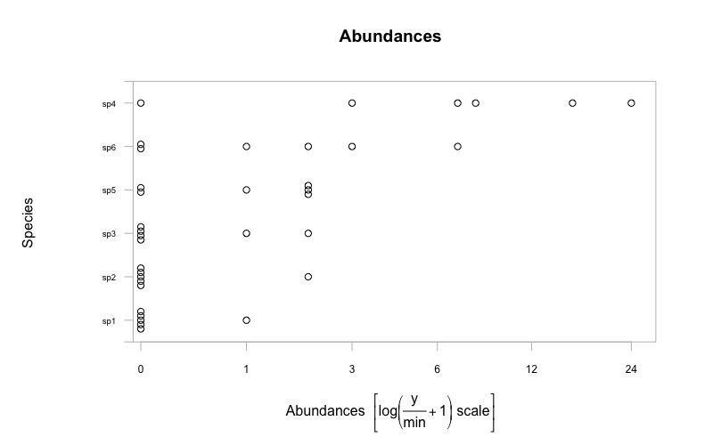
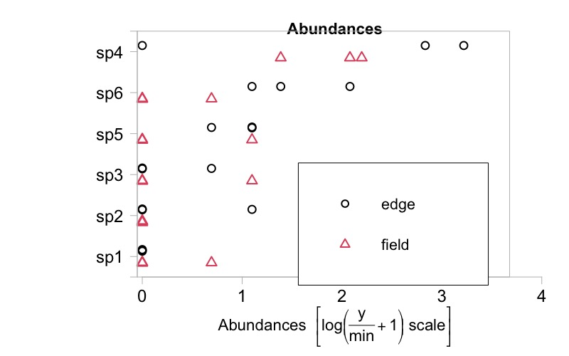
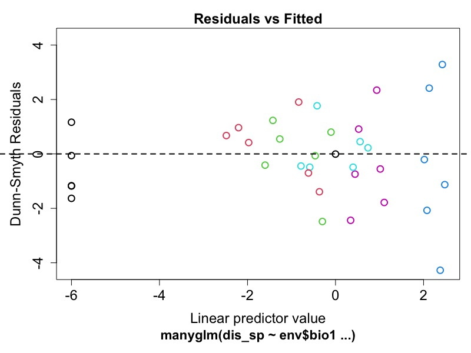
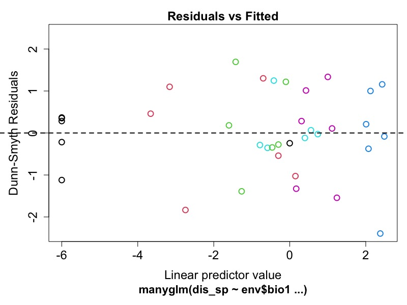
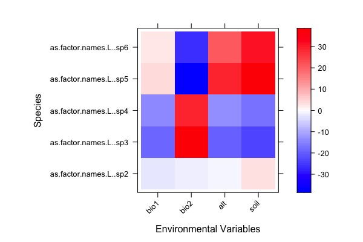
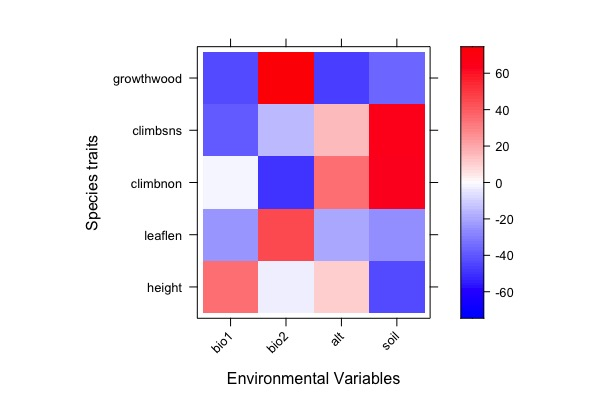
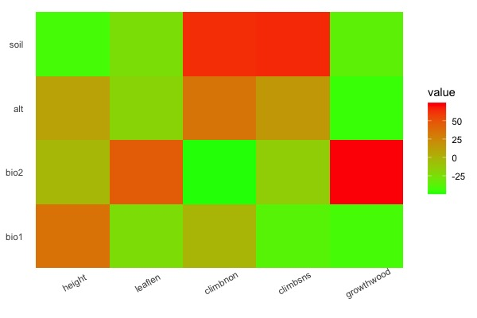

关于样地/大田数据的处理与实践
来自：https://heather-grab.github.io/Entom-4940/rql.html
准备环境
setwd('/Users/calice/desktop/rql') library(mvabund) library(lattice) # R矩阵，即为每个地点的情况 env <- read.csv("env.csv", row.names = 1) env # bio1 bio2 alt soil # a 34.9 6.0 17.1 9.0 # b 49.6 20.2 25.9 9.9 # c 37.3 2.9 13.3 9.4 # d 52.1 15.1 19.1 10.6 # e 32.2 0.0 22.9 2.6 # f 55.1 0.0 13.6 1.6 # Q矩阵，每个物种的情况 trait <- read.csv("trait.csv", row.names = 1) trait # height leaflen climb growth # sp1 861 1.90 climb herb # sp2 819 1.87 climb herb # sp3 904 2.16 climb herb # sp4 1663 1.69 non wood # sp5 1778 1.53 sns herb # sp6 1151 1.91 non herb # L矩阵，物种在地点上的情况 dis <- read.csv("dis.csv", row.names = 1) dis # sp1 sp2 sp3 sp4 sp5 sp6 # a 0 0 1 24 2 2 # b 0 0 0 16 2 3 # c 0 2 0 0 1 7 # d 0 0 0 3 0 1 # e 0 0 0 8 2 0 # f 1 0 2 7 0 0
# 等号 dis_sp = mvabund(dis) plot(dis_sp)

env2 = env env2$habitat = "field" env2$habitat[1:3] <- "edge" env2$habitat = as.factor(env2$habitat) plot(dis_sp ~ env2$habitat, tranformation = "no")

了解物种分布格局/多样性与环境的关系。
dis_sp与bio1的关系：
# 此时我们认为数据是泊松分布 mod1 <- manyglm(dis_sp ~ env$bio1, family = "poisson") plot(mod1)

mod2 <- manyglm(dis_sp ~ env$bio1, family = "negative_binomial") plot(mod2)

#bootstrap anova(mod2, nBoot = 99) # Time elapsed: 0 hr 0 min 0 sec # Analysis of Deviance Table # Model: dis_sp ~ env$bio1 # Multivariate test: # Res.Df Df.diff Dev Pr(>Dev) # (Intercept) 5 # env$bio1 4 1 8.042 0.4 # Arguments: # Test statistics calculated assuming uncorrelated response (for faster computation) # P-value calculated using 99 iterations via PIT-trap resampling.
使用p.uni参数可以具体看到所有物种与bio1的调整后的相关性是否显著。
anova(mod2, p.uni = "adjusted", nBoot = 99) # Time elapsed: 0 hr 0 min 0 sec # Analysis of Deviance Table # Model: dis_sp ~ env$bio1 # Multivariate test: # Res.Df Df.diff Dev Pr(>Dev) # (Intercept) 5 # env$bio1 4 1 8.042 0.4 # Univariate Tests: # sp1 sp2 sp3 # Dev Pr(>Dev) Dev Pr(>Dev) Dev Pr(>Dev) # (Intercept) # env$bio1 3.582 0.42 0.791 0.84 0.786 0.84 # sp4 sp5 sp6 # Dev Pr(>Dev) Dev Pr(>Dev) Dev Pr(>Dev) # (Intercept) # env$bio1 0.197 0.84 2.148 0.57 0.538 0.84 # Arguments: # Test statistics calculated assuming uncorrelated response (for faster computation) # P-value calculated using 99 iterations via PIT-trap resampling.
就是基于上面glm的一个物种分布模型，本质上是predict(glm())。模型中物种为固定效应，且通过环境相互作用。
sdm_fit = traitglm(dis_sp, env)
可以查看标准化模型系数（回归斜率）
sdm_fit$fourth # bio1 bio2 alt # as.factor.names.L..sp2 -2.146444 -1.245655 -0.905375 # as.factor.names.L..sp3 -18.360366 38.538891 -19.822485 # as.factor.names.L..sp4 -13.778650 28.875992 -12.890129 # as.factor.names.L..sp5 3.736608 -36.916878 28.603439 # as.factor.names.L..sp6 2.137445 -26.817396 21.258961 # soil # as.factor.names.L..sp2 3.243161 # as.factor.names.L..sp3 -23.591447 # as.factor.names.L..sp4 -17.058409 # as.factor.names.L..sp5 38.603482 # as.factor.names.L..sp6 31.107954
绘制
# sdm_fit$fourth.corner和sdm_fit$fourth似乎没区别 a = max(abs(sdm_fit$fourth.corner)) # 设置颜色的渐变系统 colort = colorRampPalette(c("blue","white","red")) #绘制物种与环境的关系矩阵 plot.spp = levelplot(t(as.matrix(sdm_fit$fourth.corner)), xlab="Environmental Variables", ylab="Species", col.regions=colort(100), at=seq(-a, a, length=100), scales = list( x= list(rot = 45))) print(plot.spp)

原先是环境，性状和物种分布三个角，现在要进行扩展
fit = traitglm(dis, env, trait) fit$fourth # 得到的似乎是环境与性状的关系 # bio1 bio2 alt soil # height 35.218287 -2.531766 9.834852 -42.99279 # leaflen -24.685135 45.724439 -19.270302 -25.60843 # climbnon -1.205911 -49.951263 34.751291 63.40392 # climbsns -38.426865 -15.221388 15.094146 65.29489 # growthwood -43.189380 74.579155 -46.143020 -36.40022
观察残差：
plot(fit) # nBoot最好是999什么的 anova(fit, nBoot = 10) # Using block resampling... # Resampling begins for test 1. # Resampling run 0 finished. Time elapsed: 0.00 minutes... # Time elapsed: 0 hr 0 min 0 sec # Analysis of Deviance Table # Model 1: traitglm(L = dis, R = env, Q = trait, get.fourth = FALSE) # Model 2: traitglm(L = dis, R = env, Q = trait) # Multivariate test: # Res.Df Df.diff Dev Pr(>Dev) # Main effects only 25 # env:trait (fourth corner) 5 20 50.18 0.182 # Arguments: P-value calculated using 10 iterations via PIT-trap block resampling.
可以使用summary考察所有因子的显著性
summary(fit, nBoot = 10) # Coefficients: (3 not defined because of singularities) # wald value Pr(>wald) # (Intercept) 46.704 0.0909 . # sppsp2 0.717 0.0909 . # sppsp3 7.238 0.0909 . # sppsp4 14.257 0.0909 . # sppsp5 6.968 0.0909 . # sppsp6 3.526 0.0909 . # bio1 0.000 0.2727 # bio2 0.000 0.3636 # alt 0.000 0.5455 # soil 0.000 0.3636 # bio1.squ 0.000 0.2727 # bio2.squ 0.000 0.6364 # alt.squ 259.127 0.0909 . # soil.squ 419.920 0.0909 . # bio1.height 2201.885 0.0909 . # bio1.leaflen 1185.788 0.0909 . # bio1.climbnon 101.597 0.6364 # bio1.climbsns 1568.928 0.0909 . # bio1.growthwood 8555.765 0.0909 . # bio2.height 168.033 0.5455 # bio2.leaflen 2272.804 0.0909 . # bio2.climbnon 4643.564 0.0909 . # bio2.climbsns 673.177 0.0909 . # bio2.growthwood 12272.103 0.0909 . # alt.height 648.529 0.0909 . # alt.leaflen 996.368 0.0909 . # alt.climbnon 3577.378 0.0909 . # alt.climbsns 820.169 0.0909 . # alt.growthwood 11168.552 0.0909 . # soil.height 2315.545 0.0909 . # soil.leaflen 1080.750 0.0909 . # soil.climbnon 4609.975 0.0909 . # soil.climbsns 2354.359 0.0909 . # soil.growthwood 8399.477 0.0909 . # --- # Signif. codes: 0 ‘***’ 0.001 ‘**’ 0.01 ‘*’ 0.05 ‘.’ 0.1 ‘ ’ 1 # Test statistic: 3.781e+16, p-value: 0.0909 # Arguments: P-value calculated using 10 resampling iterations via pit.trap resampling.
绘制热图：
a = max(abs(fit$fourth.corner) ) colort = colorRampPalette(c("blue","white","red")) plot.4th = levelplot(t(as.matrix(fit$fourth.corner)), xlab="Environmental Variables", ylab="Species traits", col.regions=colort(100), at=seq(-a, a, length=100), scales = list( x= list(rot = 45))) print(plot.4th)

使用ggplot2绘制heatmap：
library(ggplot2) library(reshape2) data4heatmap <- as.matrix(fit$fourth.corner) # bio1 bio2 alt soil # height 35.218287 -2.531766 9.834852 -42.99279 # leaflen -24.685135 45.724439 -19.270302 -25.60843 # climbnon -1.205911 -49.951263 34.751291 63.40392 # climbsns -38.426865 -15.221388 15.094146 65.29489 # growthwood -43.189380 74.579155 -46.143020 -36.40022 # 数据整形 heatmap <- melt(data4heatmap) # Var1 Var2 value # 1 height bio1 35.218287 # 2 leaflen bio1 -24.685135 # 3 climbnon bio1 -1.205911 # 4 climbsns bio1 -38.426865 # 5 growthwood bio1 -43.189380 # 6 height bio2 -2.531766 # 7 leaflen bio2 45.724439 # 8 climbnon bio2 -49.951263 # 9 climbsns bio2 -15.221388 # 10 growthwood bio2 74.579155 # 11 height alt 9.834852 # 12 leaflen alt -19.270302 # 13 climbnon alt 34.751291 # 14 climbsns alt 15.094146 # 15 growthwood alt -46.143020 # 16 height soil -42.992794 # 17 leaflen soil -25.608433 # 18 climbnon soil 63.403915 # 19 climbsns soil 65.294891 # 20 growthwood soil -36.400219 ggplot(data = heatmap, aes(x = Var1,y = Var2, fill = value)) + geom_tile() + # 设置填充颜色 scale_fill_continuous(low = "#00FF00", high = "#FF0000") + theme_bw() + theme( axis.ticks = element_blank(), panel.grid = element_blank(), panel.border = element_blank(), axis.title = element_blank(), # 设置x轴标注的角度 axis.text.x = element_text(angle = 30) )

ft1=traitglm(dis,env,trait,method="glm1path") ft1$fourth # LASSO各种变量筛选惩罚后把我的小数据全给惩罚没了... # bio1 bio2 alt soil # height 0 0 0 0 # leaflen 0 0 0 0 # climbclimb 0 0 0 0 # climbnon 0 0 0 0 # climbsns 0 0 0 0 # growthwood 0 0 0 0